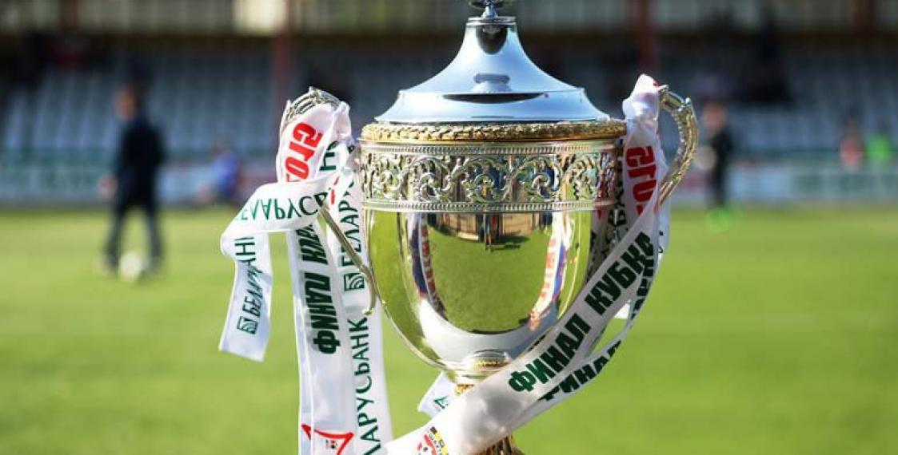

Футбол - командный вид спорта, в котором целью является забить мяч в ворота
соперника ногами или другими частями тела (кроме рук) большее количество раз,
чем команда соперника
Есть 17 официальных правил игры, каждое из которых содержит список оговорок
и руководящих принципов. Эти правила предназначены для приминения на всех уровнях
футбола, хотя есть некоторые изменения для таких групп, как юниоры,
взрослые, женщины и люди с ограниченными физическими возможностями. Законы очень
часто формулировались в общих чертах, которые позволяют упростить их применения
в зависимости от характера игры.